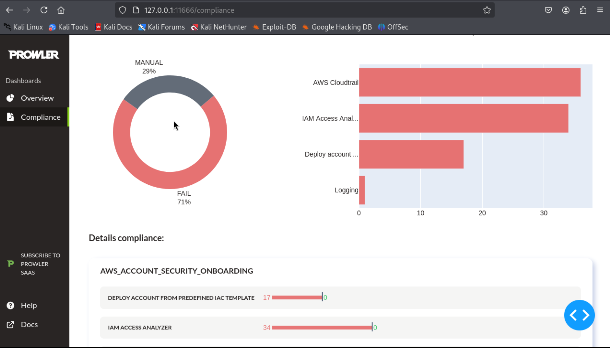
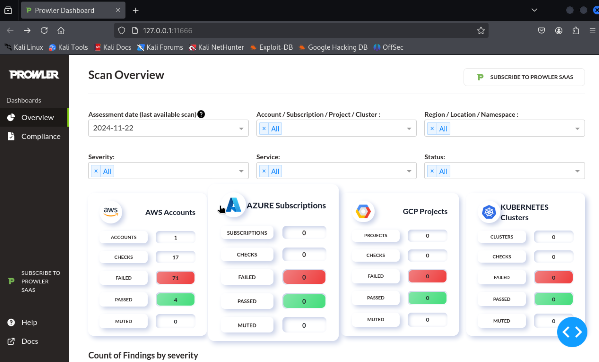
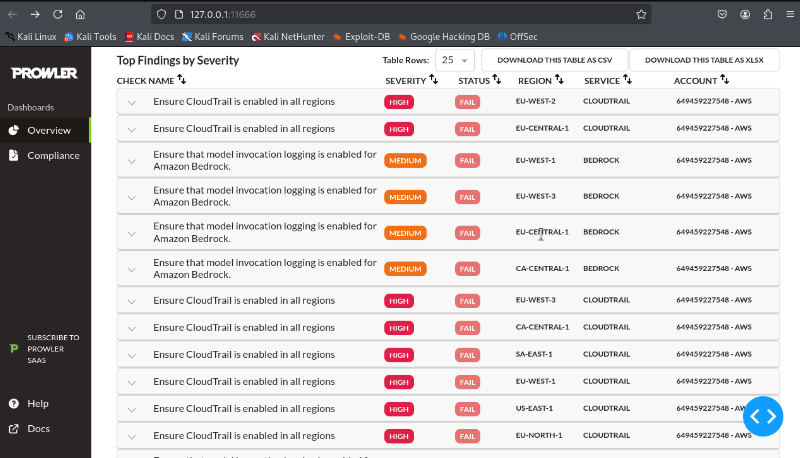

Introducción
La seguridad en entornos de computación en la nube, específicamente en Amazon Web Services (AWS), ha evolucionado para enfrentar los desafíos que surgen de su adopción masiva. AWS, como líder en servicios en la nube, ofrece un amplio conjunto de herramientas para la gestión de infraestructura, pero también introduce una complejidad inherente que puede derivar en configuraciones erróneas, permisos excesivos y vulnerabilidades explotables.
Para abordar estos desafíos, se emplearon herramientas especializadas que permiten realizar evaluaciones exhaustivas de la seguridad en AWS desde una perspectiva ofensiva y defensiva. En este artículo, describimos cómo se implementaron estas herramientas para analizar vulnerabilidades y fortalecer la postura de seguridad en un entorno basado en AWS. Las herramientas utilizadas incluyen:
-
Pacu
Un marco desarrollado por Rhino Security Labs específicamente diseñado para realizar pruebas ofensivas en AWS. Pacu permite identificar configuraciones inseguras, realizar escalamiento de privilegios, enumerar recursos y simular escenarios de ataque reales sobre infraestructuras en AWS. -
Docker
Utilizado como base para contenerizar herramientas y asegurar la portabilidad y estandarización del entorno de pruebas. Docker facilita la ejecución de herramientas como Pacu y CloudGoat, reduciendo las diferencias entre entornos locales y de producción. -
Prowler
Una herramienta de auditoría basada en línea de comandos que evalúa el cumplimiento de estándares de seguridad como CIS Benchmarks. Prowler identifica configuraciones inseguras relacionadas con políticas de IAM, registros de auditoría, cifrado, entre otros aspectos críticos de AWS, proporcionando remediaciones detalladas. -
CloudGoat
Diseñado como un laboratorio de entrenamiento en seguridad en la nube, CloudGoat genera entornos vulnerables en AWS para realizar ejercicios prácticos de ataque y defensa. Este entorno controlado facilita la exploración de técnicas ofensivas y el análisis de vectores de ataque en escenarios realistas.
Este conjunto de herramientas permite un enfoque integral para evaluar la seguridad en AWS, abarcando desde auditorías preventivas hasta simulaciones de ataques ofensivos. La combinación de Pacu y CloudGoat proporciona un marco robusto para explorar vectores de ataque, mientras que Prowler y Docker aseguran que las evaluaciones se lleven a cabo de manera consistente y eficiente.
A lo largo de este artículo, detallaremos cómo cada herramienta se configuró y utilizó en un entorno de pruebas, exploraremos hallazgos específicos y presentaremos estrategias para mitigar riesgos en AWS. Este enfoque práctico busca proporcionar a los profesionales de ciberseguridad y administradores de sistemas herramientas clave para fortalecer la resiliencia de sus entornos en la nube.
Pre-requisitos
Antes de comenzar con el análisis y las pruebas de seguridad en AWS, asegúrate de cumplir con los siguientes requisitos:
-
Cuenta de AWS activa
Se necesita una cuenta de AWS con acceso a los servicios básicos, como IAM, S3, EC2 y CloudTrail. Asegúrate de tener habilitada la facturación para no superar los límites gratuitos. -
Permisos mínimos en AWS
Se recomienda crear un usuario con permisos específicos para realizar auditorías y pruebas. El usuario debe tener los siguientes permisos:- Lectura de configuraciones de IAM, S3 y EC2.
- Acceso a registros de CloudTrail.
- Creación y eliminación de recursos en un entorno de pruebas.
Instalación de Docker
Docker es una herramienta esencial para contenerizar las aplicaciones y herramientas utilizadas en este análisis. A continuación, se muestra un video con los pasos y comandos necesarios para instalar Docker en un sistema basado en Linux. Si estás utilizando otro sistema operativo, puedes consultar la documentación oficial de Docker.
Comandos utilizados en el video:
# Instalar Docker
sudo apt update
sudo apt install -y docker.io
# Habiliar docker
sudo systemctl enable docker --now
# Verificar la instalación
sudo docker --version
Instalación de Pacu
Pacu es una herramienta diseñada para realizar pruebas ofensivas en entornos de AWS. A continuación, se muestra un video con los pasos y comandos necesarios para instalar Pacu en un sistema basado en Kali Linux. También puedes consultar el repositorio oficial de Pacu en GitHub.
Comandos utilizados en el video:
# Actualizar paquetes
sudo apt update
# Instalar Pacu
sudo apt install pacu
# Ejecutar Pacu
pacu
Una vez que completes estos pasos, Pacu estará listo para usarse.
Puedes inicializar el programa con el comando
pacu dentro del directorio clonado.
Configuración de Credenciales en Pacu
Una vez que Pacu está instalado, es necesario configurar las credenciales de AWS para realizar pruebas en el entorno deseado. Este paso permite a Pacu autenticar las solicitudes a los servicios de AWS. A continuación, se muestra un video con los pasos necesarios para configurar credenciales en Pacu. También puedes consultar la documentación oficial para más detalles.
Pasos para configurar las credenciales en Pacu:
# Ejecutar Pacu pacu # Iniciar sesión en el entorno interactivo de Pacu # Utiliza el siguiente comando para agregar un nuevo perfil de AWS add_keys # Proveer la clave de acceso y la clave secreta AWS Access Key ID:AWS Secret Access Key: # Confirmar y guardar las credenciales > Las credenciales se guardarán en el perfil seleccionado
Una vez configuradas, las credenciales estarán disponibles para todas las interacciones dentro del entorno de Pacu. Asegúrate de utilizar un perfil con permisos mínimos para reducir riesgos de seguridad.
Uso de Pacu para Escalada de Privilegios
Pacu permite identificar configuraciones mal diseñadas en AWS que podrían facilitar la escalada de privilegios. Este proceso es crucial para evaluar el impacto potencial de permisos excesivos o configuraciones inseguras en políticas de IAM. En esta sección, mostramos un ejemplo práctico utilizando Pacu para simular una escalada de privilegios en un entorno controlado.
Pasos para realizar escalada de privilegios con Pacu:
# Ejecutar el módulo para identificar posibles rutas de escalada
run iam__privesc_scan
Este módulo permite identificar y explotar configuraciones mal diseñadas en políticas de IAM que podrían permitir un escalamiento no autorizado. Es importante ejecutar estas pruebas únicamente en entornos controlados y autorizados.
Instalación de CloudGoat
CloudGoat es una herramienta diseñada para simular entornos vulnerables en AWS, ideal para practicar y comprender técnicas de ataque y defensa en la nube. A continuación, se muestra un video con los pasos necesarios para instalar CloudGoat en un sistema basado en Linux. También puedes consultar la documentación oficial para más detalles.
Pasos para instalar CloudGoat:
# Clonar el repositorio de CloudGoat
git clone https://github.com/RhinoSecurityLabs/cloudgoat.git
# Cambiar al directorio de CloudGoat
cd cloudgoat
# Build de la imagen de Docker
docker build -t cloudgoat .
# Run CloudGoat en un contenedor de Docker
docker run -it cloudgoat
# Configurar cloudgoat
cd /usr/src/cloudgoat
./cloudgoat.py config profile
# Continuar con la configuración
Después de completar estos pasos, CloudGoat estará listo para generar escenarios vulnerables. En la configuración inicial, asegúrate de proporcionar las credenciales de AWS necesarias y utiliza un entorno controlado para realizar pruebas.
Uso de CloudGoat: Escenario cloud_breach_s3
CloudGoat permite crear escenarios de vulnerabilidades en AWS para probar habilidades de ataque y defensa. En este caso, se usa el escenario cloud_breach_s3, que simula un acceso no autorizado a un bucket S3 a través de configuraciones erróneas de IAM. A continuación, se presenta un video que muestra cómo configurar y ejecutar este escenario.
Pasos para implementar el escenario cloud_breach_s3:
# Activar el escenario cloud_breach_s3
./cloudgoat.py create cloud_breach_s3
# Confirmar la creación del entorno
# CloudGoat generará los recursos necesarios en AWS
# La salida mostrará información útil para comenzar la prueba
# Después de terminar las pruebas, destruir el escenario
./cloudgoat.py destroy cloud_breach_s3
Este escenario simula un bucket S3 mal configurado que permite a un atacante obtener acceso no autorizado. Durante el ejercicio, se puede usar herramientas como Pacu para explotar el entorno y analizar la exposición de los datos.
Instalación de Prowler
Prowler es una herramienta de línea de comandos que permite auditar configuraciones de seguridad y cumplimiento en cuentas de AWS. Es ampliamente utilizada para evaluar el cumplimiento de estándares como CIS Benchmarks. A continuación, se muestra un video que detalla los pasos necesarios para instalar Prowler en un sistema basado en Linux.
Pasos para instalar Prowler:
# Instalar prowler con pip
pip3 install prowler
# Verificar que la instalación fue exitosa
prowler -v
Después de instalar Prowler, puedes usarlo para realizar auditorías de seguridad en tu cuenta de AWS. Se recomienda configurar credenciales de AWS antes de ejecutar cualquier análisis.
Escaneo con Prowler
Prowler permite realizar auditorías de seguridad en cuentas de AWS para identificar configuraciones inseguras, malas prácticas y evaluar el cumplimiento de estándares como los CIS Benchmarks. En esta sección, se muestra cómo ejecutar un escaneo con Prowler y analizar los resultados obtenidos.
Pasos para realizar un escaneo con Prowler:
# Ejecutar un escaneo general de la cuenta de AWS
prowler aws
Resultado del análisis:
  La imagen muestra un ejemplo de los resultados generados por Prowler. Cada ítem indica el cumplimiento o incumplimiento de una configuración específica, proporcionando recomendaciones para su corrección.